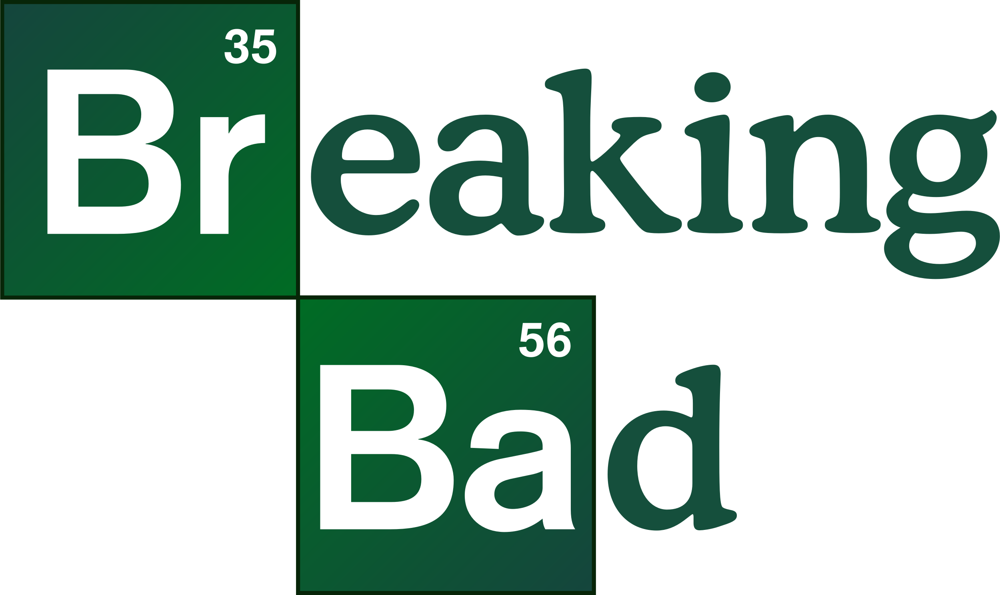

"Breaking Bad" е американски драматичен сериал, създаден от Винс Гилиган.
Излъчва се от 2008 до 2013 година по канала AMC.
Счита се за един от най-добрите сериали в историята на телевизията.

Сезони и епизоди
Сезон
Брой епизоди
Година
Сезон 1
7
2008
Сезон 2
13
2009
Сезон 3
13
2010
Сезон 4
13
2011
Сезон 5
16
2012–2013
Любопитни факти:
Сериалът има 5 сезона и общо 62 епизода.
Спечелил е 16 награди Emmy.
Химическите реакции са консултирани с реални химици.
Имотът на Уолтър Уайт е реален дом в Албукерке, Ню Мексико.
Продължението "Better Call Saul" излиза от 2015 до 2022 г.